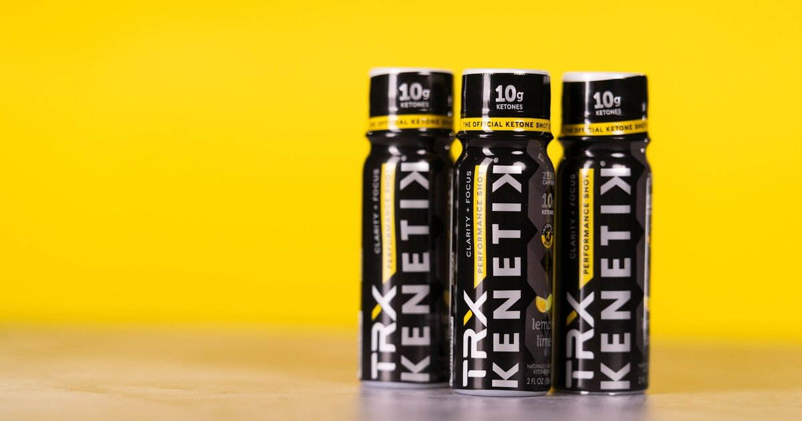

Caffeine Free Drinks for Travel Days: Plan Around the Hour You Land
On a holiday travel day the airline or the highway sets the schedule. What you drink should not need one of its own.

Thanksgiving week puts a lot of people on the road or in an airport on the same few days. The alarm goes off early, the line is long, and the departure board decides when you eat.
A day like that gets a lot of coffee thrown at it. One cup to get out the door, one at the gate, one more when the delay gets posted. I want to walk through how I think about caffeine free drinks for travel days instead, because the cup you grab at 3 PM in a terminal is still with you when you finally sit down at the other end.
Disclosure up front: I sell a caffeine free ketone drink, Kenetik, through a referral link and earn a commission when someone buys through it. It shows up near the end. Read that part knowing I get paid. This is not medical advice.
A travel day runs on two clocks
The first clock is the departure. That one gets all the attention. People plan the wake up, the drive, the security line, and they drink to get through it.
The second clock is the arrival, and it matters more. You land, you get to the house, and there is a dinner, a family, maybe a kid who wants to show you something. Then you need to sleep, because the next day is the holiday itself.
Caffeine works on the first clock and keeps working on the second. I went through how long a cup hangs around in The Coffee You Drank at 3 PM Is Still Working at Midnight. On a normal day that is a small problem. On a travel day, when the afternoon cup is the one you reach for most, it collides with the night you actually care about.
Work backward from the night
I size a trade from where I would get out, and the travel day works the same way. Start from the end.
Pick the time you want to be asleep at your destination, in that time zone. Then decide your last caffeinated drink of the day from that time, counting backward, before you leave the house. Write it on your boarding pass or in your phone if you have to. Once you are tired at a gate, every coffee looks reasonable, so make the decision while you are still rested.
After the cutoff, anything you drink should be something you never have to time. Water counts. So does decaf, which the FDA says still carries a small amount of caffeine, so it is a lower number and not a zero. A caffeine free drink with nothing to schedule around covers the rest.
Delays are where the plan breaks
The plan usually holds right up until the delay. A two hour delay turns a clean 1 PM cutoff into a 3 PM coffee, because standing at a gate with nothing to do feels like a problem a cup can solve.
Decide now what you do instead. Mine is boring on purpose: walk the terminal, refill the water bottle, and drink the same thing I would have had at my desk at that hour. If your plan only works when the flight is on time, it is not much of a plan for Thanksgiving week.
If you are driving instead of flying, the rule that matters most has nothing to do with what is in the cup. No drink replaces sleep or a stop. If you are drowsy, pull over. I wrote more about long drives in Ketones for Shift Work and Long Drives.
Pack it before you leave
Airports and rest stops sell whatever sells. At 6 AM the open counter might be a coffee stand and nothing else. If there is a specific drink you want on a travel day, bring it, and check your airline and security rules on liquids before you pack anything.
The same goes for the house you are visiting. The kitchen there is stocked for the holiday, and your routine was not on the shopping list, so bring what you plan to drink.
Keep the list of caffeine free drinks for travel days short. Water, whatever you drink in your normal afternoon slot, and nothing that needs a timer.
What I bring
My afternoon drink is Kenetik, and it has zero caffeine, so it does not matter whether I drink it at noon or after a delay at 4. The can is 12 grams of ketones, 60 calories, and zero sugar. The TRX shot in the photo above is a 2 ounce bottle with 10 grams of ketones plus electrolytes, also caffeine free and sugar free.
It has no stimulant in it, so it will not feel like coffee, and I would not want it to on a travel day. Ketones are a fuel your brain already knows how to use, and the drink supports clarity, focus, and cognitive endurance. That is as far as the claim goes. It will not fix a red eye or make up for a night of bad sleep.
Most caffeine free drinks for travel days will do the job, and you do not need mine to use any of this. The cutoff and the packing matter more than the brand. If you want to know where a ketone drink fits in a normal day, Best Time of Day to Drink Ketones covers it, and How to Cut Back on Caffeine has a four week version of the logging habit.
Safe travels this week. Caffeine free, sugar free. My link if you want to try it: https://drinkkenetik.com/EDDIEG
Promo code: EDDIEG
I earn a commission on purchases through this link. This article is consumer information and is not medical advice. Decaf note per the FDA, "Spilling the Beans: How Much Caffeine Is Too Much?", fda.gov, last checked October 26, 2026.